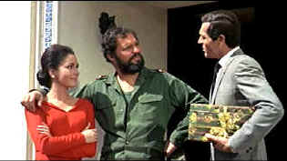

| Topaz
(SE)/B-,B- |
| Universal/1969/143/ANA
1.85 |
I have seen Topaz several times. This was the best it played for
me, but it’s still paced far too slowly, it’s talky to the extreme and somehow Hitchcock saps
the tension out without letting the audience enjoy the sweetness. The sectional structure of the
film makes it seem much longer too. There’s the very well done opening set piece of the
diplomatic defection, then there’s the Washington coda followed by the New York episode leading
to the Cuban escapade ultimately forcing the Paris confrontation.
Topaz is unlike any other Hitchcock. There's a hint of documentary style.
Rather than dramatizing, Hitchcock is presenting events. Elements of the classic procedural are in
evidence. Hitchcock goes to great lengths to establish relationships between the players and
details of involvement. The storytelling certainly lacks the flair customarily expected from
the director. Topaz is a contemporary film, dealing with events surrounding the Cuban
missile crisis a scant seven years after the fact. I think it's Hitchcock's attempt to stay up to
date, but it backfires.
 |
| Hands off my woman, Rico. ©Universal |
When a Russian intelligence big wig defects to the West, an American
CIA agent Mike Nordstrom enlists the aid of a French counterpart Andre Devereaux to corroborate
information delivered in the Russian's debriefing. Acting on his own, the Frenchman puts extra
pressure on his already delicate marital situation, but he believes he must take on this mission.
In Cuba, he rendezvous' with a gorgeous Cuban counter revolutionary, dances around a Cuban official
and helps to set in motion the apparatus to details the Cuban missile plans. His mission complete,
Devereaux must return to Paris to make sure that the information he delivered to Washington is not
compromised.
Perhaps the lack of star power backfired in Topaz, as Leonard
Maltin ponders in the excellent documentary. It’s true that lead Frederick Stafford is not
flamboyant, does not command the attention of the camera, but he’s effective nevertheless. I
always thought he was too young for the role. He looks younger than his son-in-law, though that
certainly does happen in life. The rather bland John Forsythe is on hand again under Hitchcock's
baton this time out playing a agent Mike Nordstrom. Karin Dor is hot as the Cuban Juanita de
Cordoba, Dany Robin looks great as Devereaux's wife Nicole, but John Vernon seems especially
out of place as Cuban strongman Rico Para. The French segment features some first rate
International actors including Philippe Noiret and Michel Piccoli.
Leonard Maltin provides an excellent overview of the work in the
accompanying documentary. Maltin looks at the film in relation to Hitchcock's career, provides
insights into the skill behind the work, and expands on one amazing shot that stands out.
The film elements exhibit some slight color fading, but most of the time
the DVD looks quite good. The images are reasonably sharp. Contrast ratio is less than optimal and
several scenes look a bit washed out. The Dolby 2 channel mono sound is thin but dialogue is clear.
The Maurice Jarré score is also somewhat pinched.
|
|
|
|

Selections from the Feature Archive
include articles on Akira Kurosawa, Frank
Darabont, Blonde Bimbos, Hollywood Street Gangs, or Vietnam: The
Hollywood Pariah, and many more....
.jpg)
Screen Voices and style of delivery often stamp an actor's screen
image indelibly. Click the lips to read more.

Umberto Passini Online

Vintage & Contemporary Film Poster Art. Umberto has developed a fine Internet
reputation as reliable and honest. Nice posters too!
 ETEKNet is the web's only 24-hour, totally FREE source for all your home theater,
DVD, Dreamcast, PC, and Networking tech support needs! ETEKNet is the web's only 24-hour, totally FREE source for all your home theater,
DVD, Dreamcast, PC, and Networking tech support needs!

Venerable electronics industry magazine with excellent online
selections from their hard book.

The home of John Tisch's invaluable Poster Price Almanac. Every serious poster collector
uses the Almanac as a reference.

Classic Images on classic films, featuring news, reviews, obituaries, film convention reports,
and detailed articles on film people, from the most famous to the most obscure
|